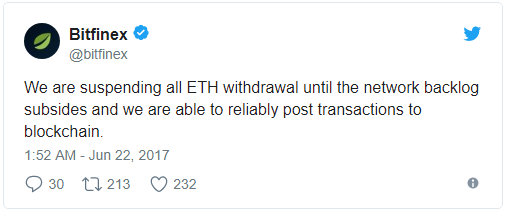

Initial Coin Offering (ICO)
- an unregulated means by which funds are raised for a new cryptocurrency venture.
An Initial Coin Offering (ICO) is used by startups to bypass the rigorous and regulated capital-raising process
required by venture capitalists or banks. In an ICO campaign, a percentage of the cryptocurrency is sold to early backers
of the project in exchange for legal tender or other cryptocurrencies.
Over 2017, ICO received much of the blame for the Ethereum
blockchain working slowly due to the network congestion caused by ICOs. One of the largest spikes happened in June
as several well-promoted ICOs were carried out. In particular, many sites and exchanges have been affected by the
congestion, suspending all ETH transactions until the network backlog subsides. Here is an exemplary tweet from one of the
largest cryptocurrency exchanges:
